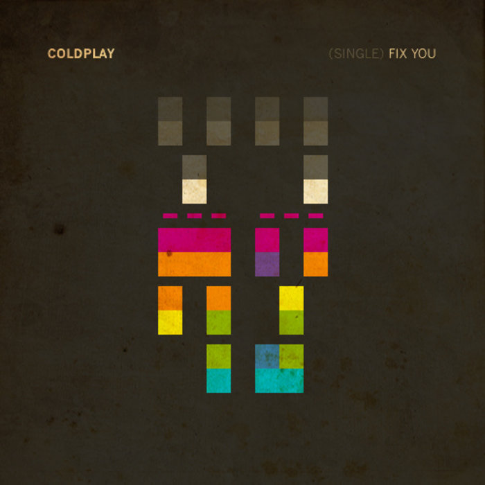

Coldplay’s “Fix You” comes from their third studio album ‘X&Y’ released way back in 2005. After a decade this song can still mesmerize you and take you through a journey of nostalgia through your most sensitive memories.
When you are down and lost, Chris Martin explains that ‘lights’ will take you home which is a metaphor for good souls healing you back to health. They will ‘fix you’ back to your safe zones. So in the chorus, Chris Martin says that he will be her ‘light’ that fixes her back to health.
Rate: ★★★★★
